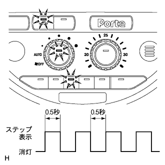

ヒータ&エアコンデイシヨナシステム ダイアグノーシスシステム |
ヒータ&エアコンディショナーシステムは、パネルダイアグノーシスを起動することによって下表に示す内容のチェックを行うことができる。
| チェック内容 | 内容 |
|---|---|
| インジケータチェック | 各スイッチの作動インジケータ、設定表示部の点滅が可能 |
| センサチェック |
|
| アクチュエータチェック | アクチュエータチェックパターンの出力が可能 |

イグニツシヨンスイツチをOFFにする。
コントロールパネルの“AUTO”スイッチと“エアコン”スイッチを同時に押しながら、イグニツシヨンスイツチをOFF→エンジンを始動する。
 |
パネルダイアグノーシスを起動させると自動的にインジケータチェックを行う。
1秒間隔で全インジケータおよび設定表示部が点灯、消灯を4回繰り返すことを確認する。
パネルダイアグノーシスを終了する場合は、“F/D”スイッチを押す。
インジケータチェックを行う。
インジケータチェックが終了すると自動的にセンサチェックを行う。
アクチュエータチェックで全てのチェックモードを行う。
 |
センサチェックの結果をインジケータ部の点滅で表示する。
センサチェックコードが出力された場合は、ダイアグコード一覧表からコードを読み取る。
パネルダイアグノーシスを終了する場合は、“F/D”スイッチを押す。
不具合箇所を点検、修理または交換する。
次の作業を行い、コード(除く現在故障)の記憶を消去する。
センサチェック中に“DEF”スイッチ(A)を押しながら“RｒDEF”スイッチ(B)を押す。
記憶消去後センサチェックを行い、正常コードが出力されることを確認する。
エンジンを始動し、十分暖気する。
|  |
インジケータチェックを行う。
インジケータチェック終了後に自動的にセンサチェックおよびアクチュエータチェックモードに移行する。
温度設定スイッチの設定温度を変えることにより各ステップに移行するので、目視、手で温度、風量を点検する。
パネルダイアグノーシスを終了する場合は、“F/D”スイッチを押す。
| ステップ | 設定温度 | ブロワレベル | 吹出口 | 吸込口 | コンプレッサ作動状態 | エアミックスダンパ開度 |
|---|---|---|---|---|---|---|
| 1 | MAX COLD-20.5 | 0 | FACE | 外気位置 | OFF | 0% |
| 2 | 21.0-22.5 | 1 | B/L | 外気位置 | ON | 0%(冷風) |
| 3 | 23.0-25.0 | 1 | FOOT1 | 外気位置 (除く寒冷地) 内外気二層位置 (寒冷地) | ON | 50% |
| 4 | 25.5-27.5 | 16 | FOOT2 | 内気位置 | ON | 50% |
| 5 | 28.0-30.0 | 16 | F/D | 内気位置 | ON | 100%(暖風) |
| 6 | 30.5-MAX HOT | 31 | DEF | 内気位置 | ON | 100%(暖風) |